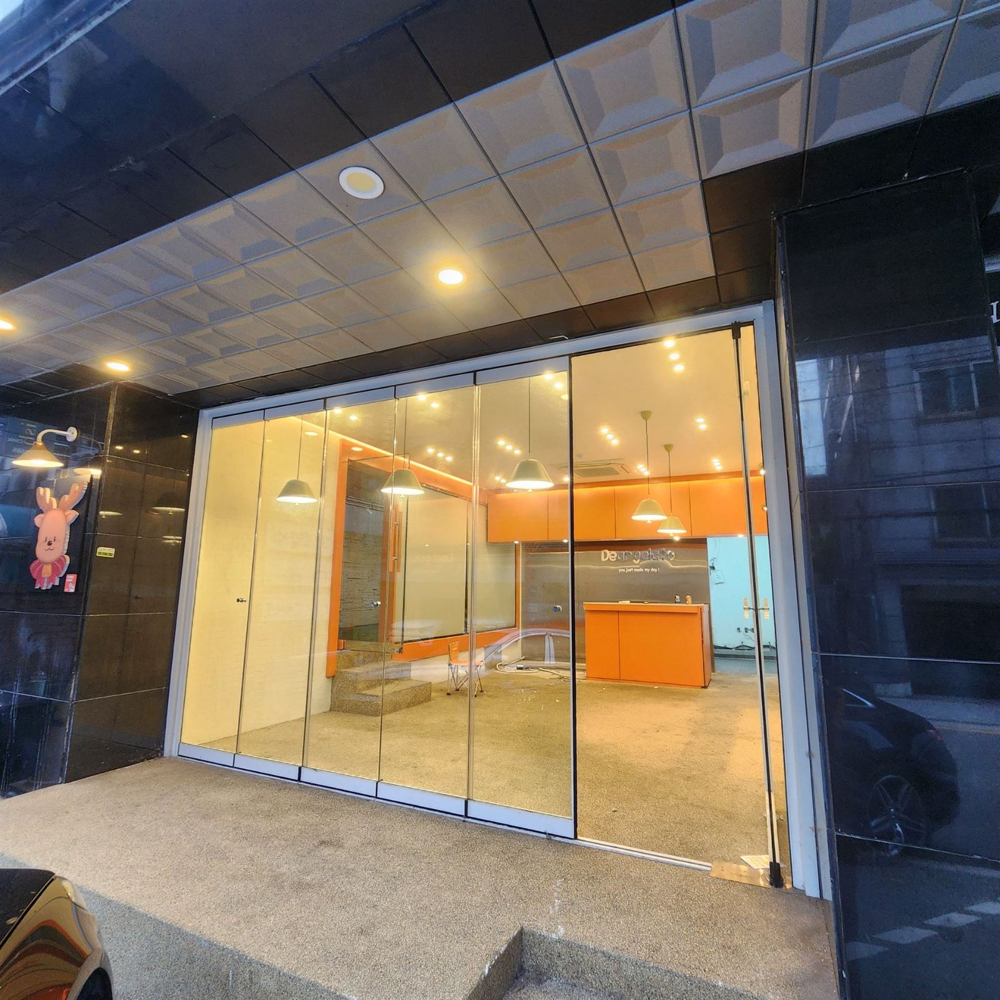
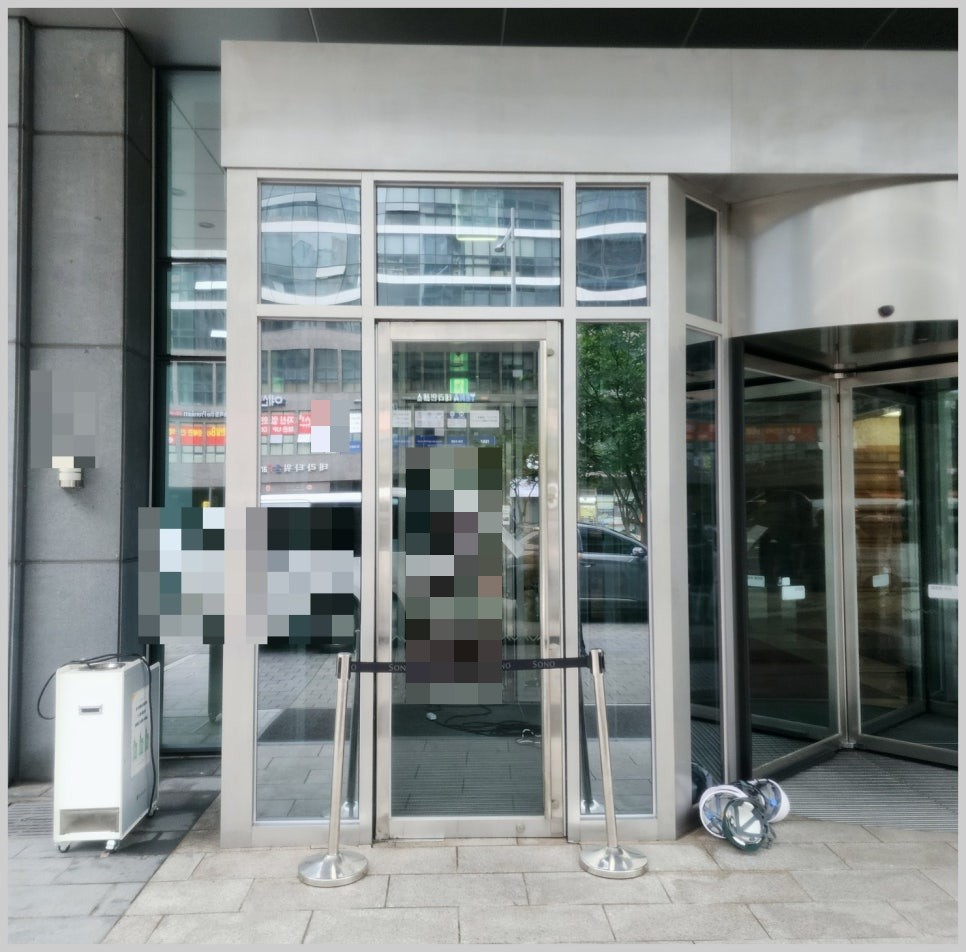
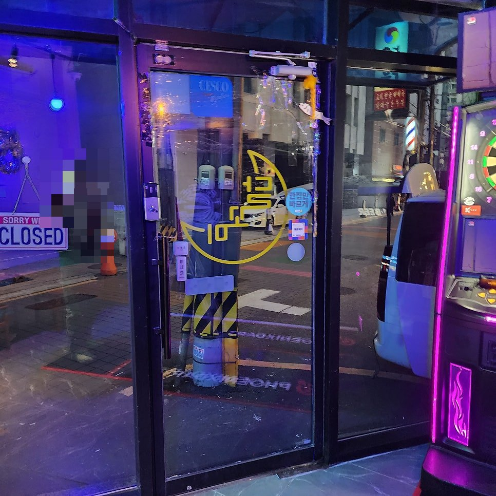

서울 · 경기 · 인천 · 현장 기록 12건
강화유리문 교체 · 설치
상가 입구 유리문이 깨졌다면 문 전체를 바꾸지 않아도 되는 경우가 많습니다. 문틀과 손잡이, 힌지, 도어클로저 상태가 괜찮으면 유리만 다시 넣습니다.
금 간 유리문, 테이프로 버티면 위험합니다
겨울철에는 특별한 충격 없이 갑자기 깨지는 경우도 있습니다. 금이 간 유리를 테이프로만 막아 두고 계속 쓰면, 문을 여닫을 때 생기는 진동으로 조각이 떨어져 지나가는 손님이 다칠 수 있습니다.
깨진 유리를 떼어낼 때도 조각이 떨어질 수 있어, 영업이 끝난 저녁 시간에 작업을 잡기도 합니다.
유리만 교체하는 재설치
신림동 상가 현장은 손잡이·힌지·도어클로저를 그대로 재사용하고, 깨진 유리만 24T 복층 세이프도어 유리로 새로 넣었습니다. 문 전체를 새로 맞추는 것보다 부담이 적습니다.
상가 유리문 교체는 보통 35~50만 원 선이며, 유리 규격과 문 상태, 작업 환경에 따라 달라집니다.
이런 작업을 합니다
- 깨진 상가·아파트 입구 강화유리도어 교체 (10T·12T, 24T 복층 세이프도어)
- 가네모 힌지, 매립 힌지, 플로어힌지 교체
- 강화도어 신설 (매립 힌지 강화도어, 가네모 강화도어)
- 병원 나무 도어틀 가네모 힌지 강화유리문 교체
- 애견미용실 호텔장 등 강화유리 도어 제작 설치
- 방화문 및 틀 원상복구, 차량 사고로 파손된 출입문
시공사례
강화유리문 시공사례 3건

송파구 건물 입구 스텐도어 프레임 교체
스텐도어는 스테인리스 틀 안에 유리를 끼운 출입문이라, 틀이 한 번 꺾이면 문짝만 다시 다는 것으로는 해결되지 않는 경우가 많습니다. 서울 송파구의 한 건물은 앞…
2026.11.20

문짝 교체 대신 유리만 바꾼 유리문수리
유리문 수리라고 해서 문짝을 통째로 갈아야 하는 건 아닙니다. 관악구의 한 상가 입구문은 부딪힌 일 없이 금이 갔는데, 문틀과 부속이 멀쩡해서 깨진 24T 복층유…
2026.11.14

관악구 매장 입구 강화도어수리
강화도어수리는 문짝 전체를 바꾸지 않고 유리만 새로 넣어 끝나는 경우가 많습니다. 서울 관악구의 한 매장은 겨울로 접어들며 부딪힌 일 없이 출입문유리에 금이 갔는…
2026.11.09
입구 유리문이 깨지면 문 전체를 바꿔야 하나요?
아니요, 문틀과 하드웨어 상태가 괜찮다면 유리만 다시 설치할 수 있습니다. 신림동 상가 현장도 손잡이·힌지·도어클로저를 그대로 재사용하고 깨진 유리만 24T 복층 세이프도어 유리로 새로 넣었습니다.
관련 시공사례 보기 →
관련 시공사례 보기 →
상가 유리문 교체 비용은 얼마인가요?
보통 35~50만 원 선입니다. 다만 유리 규격과 문 상태, 작업 환경에 따라 달라질 수 있어 현장 사진을 보고 정확히 안내해 드려요.
관련 시공사례 보기 →
관련 시공사례 보기 →
영업 중에도 유리문 교체가 가능한가요?
가능은 하지만, 깨진 유리를 떼어낼 때 조각이 떨어져 손님이 밟아 다칠 수 있어 영업이 끝난 저녁에 작업하는 편을 권해 드립니다.
관련 시공사례 보기 →
관련 시공사례 보기 →